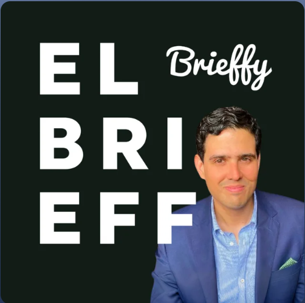

Somos el podcast que te ayuda a informarte en 15 minutos al día con los temas de conversación más importantes de México y el mundo, conducido por Arturo Salazar (@elchearturo) y publicado de lunes a viernes.
Formato breve, editorial y cotidiano: actualidad empresarial y de conversación para audiencias en México y Latinoamérica.

@elchearturo
Arturo Salazar Bazúa (conocido en redes sociales como @elchearturo) es un emprendedor, estratega de negocios y comunicador mexicano. Es reconocido principalmente por su rol como creador y conductor de El Brieff, uno de los podcasts diarios de noticias y actualidad empresarial más escuchados en México y Latinoamérica. Adicionalmente es cofundador STRTGY, una empresa de ingeniería de soluciones centrada en la inteligencia de decisiones. Es titular del podcast InteligencIA, donde analiza el impacto de la inteligencia artificial generativa, la automatización y la productividad en el entorno corporativo. Participa de forma habitual como conferencista, analista y panelista en foros de tecnología, innovación y emprendimiento.
#121C16, tinta blanca, sage
#78A08A solo como acento puntual.
Prensa y partnerships: arturo@strtgy.ai